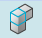
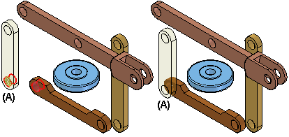
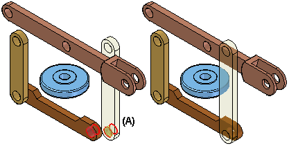

Assemble command
The Assemble command

positions parts in an assembly. You can use this command to position a single part, or you can use this command to position several parts relative to each other without fully constraining each part in an ordered sequence.This type of workflow can make it easier to position a set of interrelated parts, such as when building a mechanism.
After dragging a set of parts into an assembly, you can use the Assemble command to apply relationships between one of the parts and one or more target parts. To position a different part, right-click.

To position a series of parts using the Assemble command, you first drag the set of parts into the assembly using the Parts Library tab.
If it is a new assembly, the first part is automatically grounded. When you drag and drop the second part into the assembly, the Assemble command bar is displayed, but you can continue to drag parts into the assembly without positioning them.
After the set of parts is placed in the assembly, you can use the Assemble command to position the parts.
When you click the Assemble command, the Assemble command bar is displayed. You can use the FlashFit option to apply a mate, planar align, or axial align relationship, or choose from the complete set of ordered relationships.
After you apply a relationship between two parts, the first part you select (A) remains selected so you can apply additional relationships to the part.

To position a different part, right-click. You can then select a different part (A) and apply the relationships you want.

The Assemble command is tightly integrated with the FlashFit positioning option. When you click the Assemble command, FlashFit is the default option. For more information on FlashFit, see the Assembly Relationships topic.
Assemble command behavior
Actions within the Assemble command:
-
FlashFit is the default assembly relationship creation mode and should be used.
-
After you select a part to position, it becomes transparent. After it is fully positioned, or another part is selected, it is no longer transparent.
-
If, in the middle of positioning a part, you decide to position another part, right-click to release the current part. It is no longer transparent. The next part you select then becomes transparent.
-
If you work in wireframe, rather than shaded, you will not have the visual benefit of the selected part being transparent. For that reason, we suggest that you use Shaded with Visible Edges display mode while using the Assemble command.
-
After you select a part, you can drag it to a new position using the left mouse button. The selected part is the part to which you are applying relationships. Right-click to release the part.
-
To rotate a selected part that is unconstrained, use CTRL + click.
-
FlashFit determines whether to use a Mate or Planar Align relationship based on the closest orientation of the faces being matched. It is good practice to rotate the selected part into the approximate position before selecting the faces. After FlashFit, if the faces are 180° out of position, click the Flip button on the command bar.
-
Matching circular edges quickly positions a part, such as a fastener, in one operation. The axes are superimposed and the rotation is locked. You can unlock the rotation by editing the relationships in Assembly PathFinder. Refer to the section of this activity that addresses editing and error recovery.
How do I
Insert a part from 3Dfind.itAssemble several parts in an assembly
Display reference elements in the Place Part window
Place a part in an assembly
Capture the assembly relationships for a part
Create predefined relationships on a part or subassembly
Place parts or subassemblies with predefined relationships
Add assembly relationships to parts in an assembly automatically
Delete an assembly relationship
Flip a part in an assembly
Learn more
Placing parts in assembliesLook up more details
Insert ComponentInserting components from 3Dfind.it
Clone Component command
Clone Component command Options dialog box
Clone Component command bar
Place Part command bar
Capture Fit command
Capture Fit Dialog Box
Assign Capture Fit command
Assign Capture Fit command bar
Manage Relationships dialog box
Assemble command bar
Assemble command bar Options dialog box
Relationship Assistant Settings dialog box
Relationship Assistant Options dialog box
Assembly Relationship Assistant command bar
Assembly Relationship Assistant command
Delete Relationship command (Assembly Environment)
Maintain Relationships command (Parts Library Tab)
Flip Command